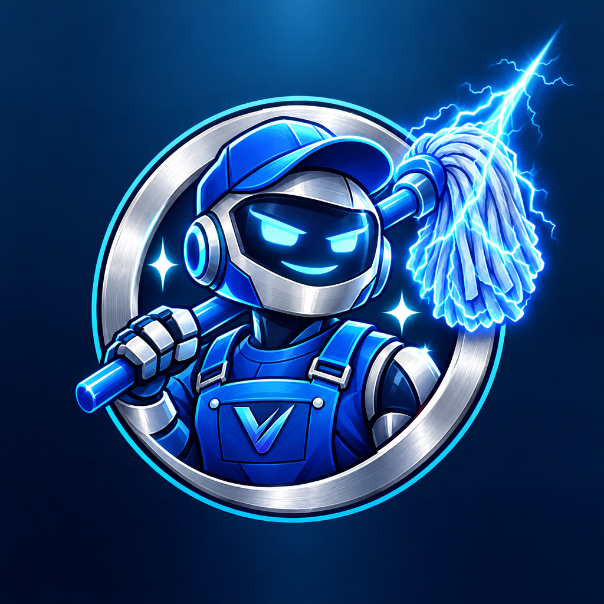

Mr Janitor Man
Keeping the Vultify Discord squeaky clean. 🧹
What it does
- Moderation: warnings, timeouts, kicks, bans and message cleanup for server moderators.
- Protection: removes spam, invite links and banned words, and guards against raids.
- Logging: keeps a moderator-only record of rule breaks and server activity.
- Content alerts: posts a notification in the Discord server when Vultify uploads a new YouTube video, goes live on Twitch, or posts a new TikTok.
TikTok integration
The creator connects their own TikTok account once through TikTok's official Login Kit. Mr Janitor Man then reads that account's basic profile (display name) and list of public videos, only to announce new videos in the creator's Discord server. It never posts to TikTok, and it doesn't access any other TikTok accounts.